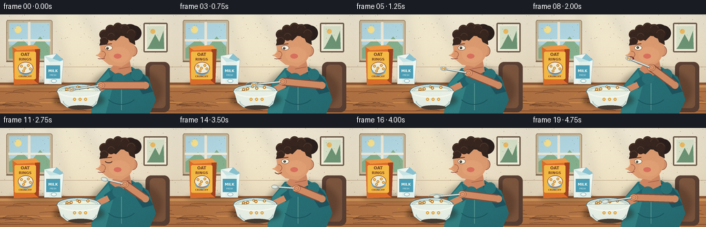
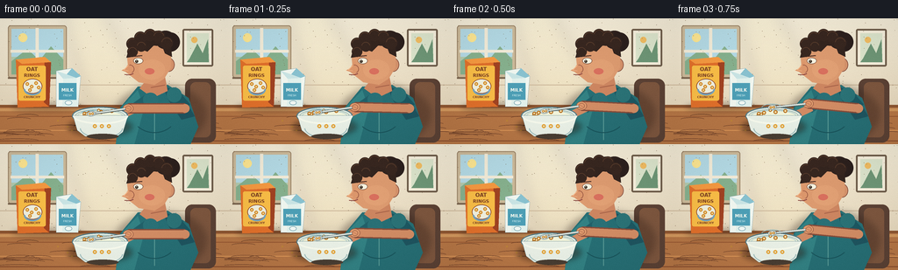

CODING AGENTS AS PIXEL WORLD MODELS
traex/GPT-5.6-Sol · motion_rationality_0018
点击播放 · 原生 RGB 像素
此结果可播放，但该运行尚未通过最终提交审核。页面展示不代表评测通过。
逐轮保存的候选
回放视频、检查图与代码变化。
每份候选均可单独播放。实际图片检查记录在下方工具轨迹中。
候选 01播放与检查图
点击播放 · 原生 RGB 像素


展开代码变化
--- 上一保存版本
+++ 本次保存版本
@@ -0,0 +1,354 @@
+from pathlib import Path
+import math
+import numpy as np
+from PIL import Image, ImageDraw, ImageFont, ImageFilter
+import artifact_io
+
+# Deterministic, hand-rendered vector animation. Supersampling gives clean RGB edges.
+W, H, N, S = 256, 144, 20, 4
+ROOT = Path(__file__).resolve().parent
+rng = np.random.default_rng(18)
+FONT = "/usr/share/fonts/truetype/dejavu/DejaVuSans-Bold.ttf"
+FONT_REG = "/usr/share/fonts/truetype/dejavu/DejaVuSans.ttf"
+
+
+def sc(v):
+ if isinstance(v, (tuple, list)):
+ return tuple(int(round(x*S)) for x in v)
+ return int(round(v*S))
+
+
+def rgba_layer():
+ return Image.new("RGBA", (W*S, H*S), (0,0,0,0))
+
+
+def ellipse(d, box, fill, outline=None, width=1):
+ d.ellipse(sc(box), fill=fill, outline=outline, width=max(1, sc(width)))
+
+
+def rectangle(d, box, fill, outline=None, width=1):
+ d.rectangle(sc(box), fill=fill, outline=outline, width=max(1, sc(width)))
+
+
+def rounded(d, box, radius, fill, outline=None, width=1):
+ d.rounded_rectangle(sc(box), radius=sc(radius), fill=fill, outline=outline, width=max(1, sc(width)))
+
+
+def polygon(d, pts, fill, outline=None):
+ d.polygon([sc(p) for p in pts], fill=fill, outline=outline)
+
+
+def line(d, pts, fill, width=1, joint="curve"):
+ d.line([sc(p) for p in pts], fill=fill, width=max(1, sc(width)), joint=joint)
+
+
+def arc(d, box, start, end, fill, width=1):
+ d.arc(sc(box), start=start, end=end, fill=fill, width=max(1,sc(width)))
+
+
+def txt(d, xy, text, size, fill, anchor=None, font=FONT):
+ f = ImageFont.truetype(font, sc(size))
+ d.text(sc(xy), text, font=f, fill=fill, anchor=anchor, stroke_width=0)
+
+
+def smooth(t):
+ t=max(0.0,min(1.0,t)); return t*t*(3-2*t)
+
+
+def lerp(a,b,t): return a+(b-a)*t
+
+
+def oriented_ellipse(d, cx, cy, major, minor, angle, fill, outline=None, width=1, steps=28):
+ ca,sa=math.cos(angle),math.sin(angle)
+ pts=[]
+ for i in range(steps):
+ q=2*math.pi*i/steps
+ x=math.cos(q)*major/2; y=math.sin(q)*minor/2
+ pts.append((cx+x*ca-y*sa, cy+x*sa+y*ca))
+ polygon(d,pts,fill,outline)
+ if outline and width>1:
+ line(d,pts+[pts[0]],outline,width)
+
+# Stable scene texture points and cereal pieces.
+wall_specks=[(float(rng.uniform(0,W)),float(rng.uniform(0,101)),int(rng.integers(5,17))) for _ in range(145)]
+wood_lines=[(float(rng.uniform(0,256)), float(rng.uniform(108,144)), float(rng.uniform(18,60))) for _ in range(28)]
+cereal = [(float(rng.uniform(92,132)), float(rng.uniform(105,116)), float(rng.uniform(1.55,2.3))) for _ in range(15)]
+# Keep cereal centers inside the visible milk ellipse.
+cereal=[p for p in cereal if ((p[0]-112)/23)**2+((p[1]-110)/8.0)**2 < .82]
+
+
+def background():
+ # warm matte wall gradient
+ yy=np.linspace(0,1,H*S)[:,None,None]
+ top=np.array([247,239,218],dtype=float); bot=np.array([225,208,178],dtype=float)
+ arr=np.empty((H*S,W*S,3),dtype=np.uint8)
+ arr[:]=np.clip(top*(1-yy)+bot*yy,0,255)
+ im=Image.fromarray(arr,"RGB").convert("RGBA")
+ d=ImageDraw.Draw(im)
+ # soft daylight beam
+ beam=rgba_layer(); bd=ImageDraw.Draw(beam)
+ polygon(bd,[(73,0),(121,0),(181,101),(102,101)],(255,244,185,34))
+ beam=beam.filter(ImageFilter.GaussianBlur(sc(8)))
+ im=Image.alpha_composite(im,beam); d=ImageDraw.Draw(im)
+ # window recess, sky and distant landscape
+ rounded(d,(9,8,76,68),3,(205,187,155,255),(157,134,105,255),1)
+ rectangle(d,(13,12,72,64),(181,219,230,255))
+ rectangle(d,(13,44,72,64),(179,203,175,255))
+ polygon(d,[(13,49),(31,35),(45,48),(58,32),(72,47),(72,64),(13,64)],(135,177,142,255))
+ ellipse(d,(21,17,31,27),(255,231,146,235))
+ # window crossbars
+ rectangle(d,(40.5,11,44,65),(244,237,218,255))
+ rectangle(d,(12,36,73,39),(244,237,218,255))
+ line(d,[(9,68),(76,68)],(124,102,80,255),2)
+ # backsplash seam and small framed print
+ line(d,[(0,76),(256,76)],(205,185,156,255),1)
+ rounded(d,(208,12,243,55),2,(248,241,222,255),(111,93,74,255),2)
+ rectangle(d,(213,17,238,50),(221,230,205,255))
+ polygon(d,[(216,46),(225,29),(231,40),(237,24),(238,50),(213,50)],(111,151,119,255))
+ ellipse(d,(218,21,225,28),(242,190,99,255))
+ # wall texture, nearly invisible but adds richness
+ for x,y,a in wall_specks:
+ ellipse(d,(x,y,x+.35,y+.35),(120,96,70,a))
+ # counter/table back edge and wood tabletop
+ rectangle(d,(0,99,256,144),(142,86,49,255))
+ rectangle(d,(0,102,256,144),(183,119,70,255))
+ rectangle(d,(0,103,256,106),(211,153,94,255))
+ # horizontal wood gradients
+ for y,c in [(112,(155,91,52,85)),(128,(220,151,88,65)),(140,(133,74,45,80))]:
+ line(d,[(0,y),(256,y)],c,1)
+ for x,y,l in wood_lines:
+ arc(d,(x-l/2,y-2,x+l/2,y+2),180,355,(106,61,39,42),.45)
+ # napkin and a few foreground crumbs
+ polygon(d,[(161,119),(211,117),(217,137),(166,140)],(234,222,197,210))
+ line(d,[(166,123),(211,121)],(204,188,160,180),.6)
+ for x,y in [(77,124),(82,128),(66,117)]: ellipse(d,(x-1,y-1,x+1,y+1),(188,131,57,230))
+ return im
+
+BASE=background()
+
+
+def draw_box_and_milk(im):
+ d=ImageDraw.Draw(im)
+ # floor shadows
+ shadow=rgba_layer(); sd=ImageDraw.Draw(shadow)
+ ellipse(sd,(13,96,96,107),(57,34,24,70)); shadow=shadow.filter(ImageFilter.GaussianBlur(sc(3)))
+ im.alpha_composite(shadow); d=ImageDraw.Draw(im)
+ # cereal box with dimensional side and friendly bowl icon
+ polygon(d,[(18,47),(51,44),(58,50),(56,101),(20,102)],(225,112,43,255))
+ polygon(d,[(51,44),(58,50),(56,101),(50,96)],(161,67,34,255))
+ polygon(d,[(18,47),(51,44),(58,50),(25,52)],(246,154,65,255))
+ rounded(d,(21,54,52,94),2,(250,190,71,255))
+ txt(d,(36.5,58),"OAT",6,(121,61,34,255),anchor="mm")
+ txt(d,(36.5,65),"RINGS",5.2,(121,61,34,255),anchor="mm")
+ ellipse(d,(26,69,48,86),(242,242,224,255),(141,69,39,255),.7)
+ arc(d,(27,74,47,88),0,180,(118,164,191,255),2)
+ for x,y in [(31,75),(36,78),(41,74),(44,79),(34,82)]:
+ ellipse(d,(x-2,y-2,x+2,y+2),(214,142,44,255)); ellipse(d,(x-.8,y-.8,x+.8,y+.8),(245,228,174,255))
+ txt(d,(36.5,90),"CRUNCHY",3.6,(121,61,34,255),anchor="mm")
+ # milk carton, distinct blue/white package
+ polygon(d,[(64,60),(82,57),(92,66),(89,101),(64,101)],(241,247,240,255),(111,147,157,255))
+ polygon(d,[(82,57),(92,66),(87,68),(76,64)],(137,194,208,255))
+ polygon(d,[(64,60),(76,64),(87,68),(72,69)],(202,229,229,255))
+ polygon(d,[(72,69),(87,68),(89,101),(71,101)],(227,242,237,255))
+ rectangle(d,(67,74,87,93),(77,159,182,255))
+ txt(d,(77,82),"MILK",5,(255,255,244,255),anchor="mm")
+ txt(d,(77,88),"FRESH",2.9,(224,248,248,255),anchor="mm",font=FONT_REG)
+ ellipse(d,(74,94,82,99),(244,250,245,255),(90,148,164,255),.5)
+
+
+def draw_person_base(im, f, spoon_xy, hand_xy):
+ d=ImageDraw.Draw(im)
+ # Chair back silhouette
+ rounded(d,(211,69,246,142),8,(92,66,53,255))
+ rounded(d,(217,73,240,136),6,(126,87,63,255))
+ # torso shadow
+ sh=rgba_layer(); sd=ImageDraw.Draw(sh)
+ ellipse(sd,(131,77,234,143),(55,34,25,90)); sh=sh.filter(ImageFilter.GaussianBlur(sc(4))); im.alpha_composite(sh)
+ d=ImageDraw.Draw(im)
+ # torso and shirt
+ polygon(d,[(157,78),(191,76),(215,91),(226,124),(217,144),(132,144),(137,102)],(39,111,117,255))
+ polygon(d,[(186,77),(207,86),(222,112),(207,116),(191,92)],(31,85,96,255))
+ polygon(d,[(139,101),(157,82),(164,103),(153,144),(132,144)],(51,130,132,255))
+ line(d,[(176,96),(176,139)],(91,157,151,130),1)
+ arc(d,(151,91,201,131),40,140,(25,84,91,120),1)
+ # neck
+ polygon(d,[(168,69),(188,67),(191,83),(174,91),(159,80)],(205,134,97,255))
+ line(d,[(172,79),(188,76)],(158,90,68,130),1)
+ # ear behind face
+ ellipse(d,(185,45,199,61),(213,146,107,255),(132,77,60,255),.7)
+ arc(d,(189,49,196,57),90,265,(157,91,68,255),.8)
+ # head profile (faces left)
+ polygon(d,[(153,26),(179,21),(195,34),(195,56),(187,69),(176,76),(158,73),(148,65),(143,61),(146,55),(145,46)],(221,155,112,255))
+ # nose and cheek modeling
+ polygon(d,[(149,48),(143,57),(138.5,59.5),(146,62),(152,61)],(220,151,108,255))
+ ellipse(d,(158,47,188,70),(226,161,117,70))
+ arc(d,(143,53,153,63),265,70,(149,83,63,255),.65)
+ # hair mass, bun and curls
+ ellipse(d,(177,14,200,35),(49,35,31,255))
+ ellipse(d,(183,16,205,38),(44,32,29,255))
+ polygon(d,[(149,28),(158,17),(179,14),(194,25),(196,44),(188,40),(185,32),(175,31),(168,38),(157,34),(151,44),(144,45)],(52,37,31,255))
+ for x,y,r in [(151,29,7),(160,22,7),(171,19,7),(181,21,7),(190,28,7),(151,38,6),(161,32,6)]:
+ ellipse(d,(x-r,y-r,x+r,y+r),(56,39,32,255))
+ arc(d,(x-r+1,y-r+1,x+r-1,y+r-1),190,345,(91,62,45,210),.8)
+ # eyebrow and eye tracking the spoon
+ ex,ey=157,48
+ blink = (f == 11)
+ line(d,[(152,43.5),(162,42.5)],(72,45,37,255),1.2)
+ if blink:
+ arc(d,(152,45,163,51),10,170,(74,45,36,255),1.2)
+ else:
+ ellipse(d,(152,45,163,52),(250,245,225,255),(100,60,45,255),.6)
+ # gaze follows spoon, bounded within eye
+ gx=max(-1.8,min(1.3,(spoon_xy[0]-150)/35)); gy=max(-.7,min(1.1,(spoon_xy[1]-62)/35))
+ ellipse(d,(157+gx-1.7,48+gy-1.7,157+gx+1.7,48+gy+1.7),(58,45,34,255))
+ ellipse(d,(157+gx-.5,48+gy-.8,157+gx+.2,48+gy-.1),(255,255,240,230))
+ # nose highlight
+ line(d,[(146,54),(141,59),(146,60)],(244,183,136,200),.7)
+ # Mouth opens to receive spoon, then chews.
+ if 7 <= f <= 9:
+ ellipse(d,(141.5,61,151.5,67),(92,43,43,255))
+ arc(d,(143,62,150,67),180,350,(235,132,126,255),1.4)
+ elif f in (10,12,14):
+ arc(d,(142,60,153,67),15,160,(128,60,53,255),1.2)
+ else:
+ line(d,[(142,64),(148,64.5),(152,63)],(126,55,51,255),1.1)
+ ellipse(d,(149.5,62.4,151,63.1),(245,184,151,180))
+ # cheek warmth
+ ellipse(d,(165,57,176,64),(217,112,94,45))
+
+
+def draw_arms(im, f, spoon_xy, hand_xy):
+ d=ImageDraw.Draw(im)
+ # Left arm steadies the bowl; shirt upper arm -> forearm -> hand.
+ line(d,[(171,91),(154,103)],(34,97,106,255),13)
+ ellipse(d,(163,85,180,101),(42,113,119,255))
+ line(d,[(157,102),(136,112)],(210,140,101,255),9)
+ ellipse(d,(131,107,142,117),(222,155,111,255),(144,82,61,255),.6)
+ # Right arm: shoulder-to-elbow sleeve, elbow-to-moving hand bare forearm.
+ shoulder=(197,87); elbow=(211,103)
+ line(d,[shoulder,elbow],(29,88,98,255),15)
+ ellipse(d,(190,79,207,96),(43,115,119,255))
+ # subtle forearm shadow then skin
+ line(d,[elbow,hand_xy],(135,77,59,100),12)
+ line(d,[elbow,hand_xy],(211,141,101,255),9)
+ ellipse(d,(elbow[0]-5,elbow[1]-5,elbow[0]+5,elbow[1]+5),(211,141,101,255))
+ # hand wraps spoon handle
+ hx,hy=hand_xy
+ ellipse(d,(hx-6,hy-5,hx+6,hy+5),(224,155,110,255),(137,79,60,255),.6)
+ # fingers as curved accents
+ ang=math.atan2(spoon_xy[1]-hy,spoon_xy[0]-hx)
+ nx,ny=-math.sin(ang),math.cos(ang)
+ for off in (-1.6,1.3):
+ line(d,[(hx+nx*off-2*math.cos(ang),hy+ny*off-2*math.sin(ang)),
+ (hx+nx*off+2.5*math.cos(ang),hy+ny*off+2.5*math.sin(ang))],(169,96,72,210),.55)
+
+
+def draw_bowl_and_spoon(im, f, spoon_xy, hand_xy, carrying):
+ d=ImageDraw.Draw(im)
+ # Table contact shadow
+ sh=rgba_layer(); sd=ImageDraw.Draw(sh)
+ ellipse(sd,(78,113,151,135),(49,27,18,115)); sh=sh.filter(ImageFilter.GaussianBlur(sc(3))); im.alpha_composite(sh)
+ d=ImageDraw.Draw(im)
+ # Bowl back rim and milk surface
+ ellipse(d,(82,101,146,122),(224,235,225,255),(83,120,131,255),1.2)
+ ellipse(d,(86,104,142,118),(244,246,220,255),(145,175,177,255),.8)
+ # milk blue-gray inner edge
+ arc(d,(88,105,140,118),182,357,(183,209,209,255),1)
+ # cereal rings; slightly offset near spoon while it is in bowl
+ in_bowl = spoon_xy[1] > 99
+ for i,(x,y,r) in enumerate(cereal):
+ shift = 0.0
+ if in_bowl:
+ dist=((x-spoon_xy[0])**2+(y-spoon_xy[1])**2)**.5
+ if dist<12: shift=(12-dist)*.18*(1 if x>=spoon_xy[0] else -1)
+ yy=y + .25*math.sin(i+f*.35) if in_bowl else y
+ ellipse(d,(x-r+shift,yy-r,x+r+shift,yy+r),(210,137,43,255),(159,94,29,255),.4)
+ ellipse(d,(x-r*.43+shift,yy-r*.43,x+r*.43+shift,yy+r*.43),(246,235,194,255))
+ # ripple around entering spoon
+ if in_bowl:
+ arc(d,(spoon_xy[0]-12,spoon_xy[1]-4,spoon_xy[0]+12,spoon_xy[1]+4),180,355,(144,188,194,190),.7)
+ # bowl front after contents
+ polygon(d,[(83,111),(146,111),(140,130),(132,136),(97,135),(88,128)],(235,242,232,255),(79,116,126,255))
+ arc(d,(83,102,146,121),0,180,(249,252,239,255),2)
+ arc(d,(91,113,140,137),4,176,(151,187,188,255),1)
+ ellipse(d,(99,132,135,138),(73,62,51,70))
+ # small cereal motif on front
+ for x in (108,116,124):
+ ellipse(d,(x-2.2,121,x+2.2,125.4),(229,166,60,255)); ellipse(d,(x-.8,122.4,x+.8,124),(235,242,232,255))
+ # Spoon must sit in front of bowl at beginning/end. Draw handle and oval bowl oriented along handle.
+ sx,sy=spoon_xy; hx,hy=hand_xy
+ angle=math.atan2(hy-sy,hx-sx)
+ # metallic handle, dark edge and bright core
+ line(d,[(sx,sy),(hx,hy)],(82,94,95,255),3.0)
+ line(d,[(sx,sy),(hx,hy)],(214,225,219,255),1.7)
+ line(d,[(sx+1,sy-1),(hx,hy-1)],(250,250,239,180),.45)
+ oriented_ellipse(d,sx,sy,10,5.8,angle,(184,199,197,255),(76,91,94,255),.7)
+ oriented_ellipse(d,sx-.6*math.cos(angle),sy-.6*math.sin(angle),7.2,3.4,angle,(225,232,221,255),None)
+ # Milk and cereal visibly ride the spoon until the bite.
+ if carrying:
+ oriented_ellipse(d,sx-.4*math.cos(angle),sy-.4*math.sin(angle),6.1,2.8,angle,(246,246,219,255))
+ for off in (-1.7,1.5):
+ cx=sx+off*math.cos(angle); cy=sy+off*math.sin(angle)
+ ellipse(d,(cx-1.35,cy-1.35,cx+1.35,cy+1.35),(214,141,43,255),(152,92,30,255),.3)
+ ellipse(d,(cx-.45,cy-.45,cx+.45,cy+.45),(246,233,190,255))
+ # hand is partly over the handle for secure grip (small thumb)
+ ellipse(d,(hx-3.2,hy-3.0,hx+3.6,hy+3.2),(223,153,109,255),(142,79,59,255),.45)
+ line(d,[(hx-2,hy-1),(hx+2,hy+1)],(166,92,69,200),.55)
+
+
+def motion(f):
+ # One complete, readable eat cycle: scoop -> lift -> bite/chew -> return.
+ if f <= 2:
+ t=smooth(f/2)
+ sx=lerp(104,109,t); sy=lerp(109,106,t)
+ hx=lerp(146,151,t); hy=lerp(103,100,t)
+ carry=True
+ elif f <= 7:
+ t=smooth((f-2)/5)
+ sx=lerp(109,143.5,t); sy=lerp(106,64,t)
+ hx=lerp(151,176,t); hy=lerp(100,77,t)
+ carry=True
+ elif f <= 9:
+ t=(f-7)/2
+ sx=143.5+0.6*math.sin(t*math.pi); sy=64+.3*math.sin(t*math.pi)
+ hx=176+1.2*t; hy=77+.4*t
+ carry=(f<=8)
+ elif f <= 12:
+ # withdraw clean spoon while chewing
+ t=smooth((f-9)/3)
+ sx=lerp(144,154,t); sy=lerp(64.5,78,t)
+ hx=lerp(177,182,t); hy=lerp(77.5,83,t)
+ carry=False
+ elif f <= 18:
+ t=smooth((f-12)/6)
+ sx=lerp(154,110,t); sy=lerp(78,107,t)
+ hx=lerp(182,150,t); hy=lerp(83,101,t)
+ carry=False
+ else:
+ sx=108+2*math.sin((f-18)*1.6); sy=107+1.1*math.cos((f-18)*1.6)
+ hx=150+1*math.sin((f-18)*1.6); hy=101
+ carry=False
+ return (sx,sy),(hx,hy),carry
+
+
+def render(f):
+ im=BASE.copy()
+ draw_box_and_milk(im)
+ spoon,hand,carrying=motion(f)
+ draw_person_base(im,f,spoon,hand)
+ draw_arms(im,f,spoon,hand)
+ draw_bowl_and_spoon(im,f,spoon,hand,carrying)
+ # Soft global warm highlight and subtle vignette.
+ arr=np.asarray(im.convert("RGB").resize((W,H),Image.Resampling.LANCZOS)).astype(np.float32)
+ yy,xx=np.mgrid[0:H,0:W]
+ vig=1-0.10*np.clip(((xx-W/2)/(W*.73))**2+((yy-H/2)/(H*.78))**2,0,1)
+ arr*=vig[...,None]
+ # Stable fine grain prevents flat fills, without temporal flicker.
+ grain=np.random.default_rng(200).normal(0,0.65,(H,W,1))
+ arr=np.clip(arr+grain,0,255).astype(np.uint8)
+ return arr
+
+frames=np.stack([render(i) for i in range(N)],axis=0)
+assert frames.shape==(20,144,256,3) and frames.dtype==np.uint8
+artifact_io.save(frames, ROOT)
+print("saved",frames.shape,frames.dtype,"range",int(frames.min()),int(frames.max()))
可观测工具轨迹
实际执行的命令与返回图片。
命令 1exit 0
/bin/bash -lc "cat prompt.txt && printf '\\n--- GENERATION_RULES.md ---\\n' && cat GENERATION_RULES.md"
命令 2exit 0
/bin/bash -lc "printf '%s\\n' '--- task_spec.json ---' && cat task_spec.json && printf '%s\\n' '--- files ---' && find . -maxdepth 3 -type f -printf '%p\\n' | sort"
命令 3exit 0
/bin/bash -lc "command -v ffmpeg || true; command -v python3 || true; python3 - <<'PY' mods=['PIL','numpy','cv2','cairo','moviepy'] for m in mods: try: x=__import__(m); print(m,'OK',getattr(x,'__version__','')) except Exception as e: print(m,'NO',e) PY"
命令 4exit 0
/bin/bash -lc 'cat artifact_io.py'
命令 5exit 0
/bin/bash -lc 'fc-list | head -20'
命令 6exit 0
/bin/bash -lc "cat > generate.py <<'PY'
from pathlib import Path
import math
import numpy as np
from PIL import Image, ImageDraw, ImageFont, ImageFilter
import artifact_io
# Deterministic, hand-rendered vector animation. Supersampling gives clean RGB edges.
W, H, N, S = 256, 144, 20, 4
ROOT = Path(__file__).resolve().parent
rng = np.random.default_rng(18)
FONT = \"/usr/share/fonts/truetype/dejavu/DejaVuSans-Bold.ttf\"
FONT_REG = \"/usr/share/fonts/truetype/dejavu/DejaVuSans.ttf\"
def sc(v):
if isinstance(v, (tuple, list)):
return tuple(int(round(x*S)) for x in v)
return int(round(v*S))
def rgba_layer():
return Image.new(\"RGBA\", (W*S, H*S), (0,0,0,0))
def ellipse(d, box, fill, outline=None, width=1):
d.ellipse(sc(box), fill=fill, outline=outline, width=max(1, sc(width)))
def rectangle(d, box, fill, outline=None, width=1):
d.rectangle(sc(box), fill=fill, outline=outline, width=max(1, sc(width)))
def rounded(d, box, radius, fill, outline=None, width=1):
d.rounded_rectangle(sc(box), radius=sc(radius), fill=fill, outline=outline, width=max(1, sc(width)))
def polygon(d, pts, fill, outline=None):
d.polygon([sc(p) for p in pts], fill=fill, outline=outline)
def line(d, pts, fill, width=1, joint=\"curve\"):
d.line([sc(p) for p in pts], fill=fill, width=max(1, sc(width)), joint=joint)
def arc(d, box, start, end, fill, width=1):
d.arc(sc(box), start=start, end=end, fill=fill, width=max(1,sc(width)))
def txt(d, xy, text, size, fill, anchor=None, font=FONT):
f = ImageFont.truetype(font, sc(size))
d.text(sc(xy), text, font=f, fill=fill, anchor=anchor, stroke_width=0)
def smooth(t):
t=max(0.0,min(1.0,t)); return t*t*(3-2*t)
def lerp(a,b,t): return a+(b-a)*t
def oriented_ellipse(d, cx, cy, major, minor, angle, fill, outline=None, width=1, steps=28):
ca,sa=math.cos(angle),math.sin(angle)
pts=[]
for i in range(steps):
q=2*math.pi*i/steps
x=math.cos(q)*major/2; y=math.sin(q)*minor/2
pts.append((cx+x*ca-y*sa, cy+x*sa+y*ca))
polygon(d,pts,fill,outline)
if outline and width>1:
line(d,pts+[pts[0]],outline,width)
# Stable scene texture points and cereal pieces.
wall_specks=[(float(rng.uniform(0,W)),float(rng.uniform(0,101)),int(rng.integers(5,17))) for _ in range(145)]
wood_lines=[(float(rng.uniform(0,256)), float(rng.uniform(108,144)), float(rng.uniform(18,60))) for _ in range(28)]
cereal = [(float(rng.uniform(92,132)), float(rng.uniform(105,116)), float(rng.uniform(1.55,2.3))) for _ in range(15)]
# Keep cereal centers inside the visible milk ellipse.
cereal=[p for p in cereal if ((p[0]-112)/23)**2+((p[1]-110)/8.0)**2 < .82]
def background():
# warm matte wall gradient
yy=np.linspace(0,1,H*S)[:,None,None]
top=np.array([247,239,218],dtype=float); bot=np.array([225,208,178],dtype=float)
arr=np.empty((H*S,W*S,3),dtype=np.uint8)
arr[:]=np.clip(top*(1-yy)+bot*yy,0,255)
im=Image.fromarray(arr,\"RGB\").convert(\"RGBA\")
d=ImageDraw.Draw(im)
# soft daylight beam
beam=rgba_layer(); bd=ImageDraw.Draw(beam)
polygon(bd,[(73,0),(121,0),(181,101),(102,101)],(255,244,185,34))
beam=beam.filter(ImageFilter.GaussianBlur(sc(8)))
im=Image.alpha_composite(im,beam); d=ImageDraw.Draw(im)
# window recess, sky and distant landscape
rounded(d,(9,8,76,68),3,(205,187,155,255),(157,134,105,255),1)
rectangle(d,(13,12,72,64),(181,219,230,255))
rectangle(d,(13,44,72,64),(179,203,175,255))
polygon(d,[(13,49),(31,35),(45,48),(58,32),(72,47),(72,64),(13,64)],(135,177,142,255))
ellipse(d,(21,17,31,27),(255,231,146,235))
# window crossbars
rectangle(d,(40.5,11,44,65),(244,237,218,255))
rectangle(d,(12,36,73,39),(244,237,218,255))
line(d,[(9,68),(76,68)],(124,102,80,255),2)
# backsplash seam and small framed print
line(d,[(0,76),(256,76)],(205,185,156,255),1)
rounded(d,(208,12,243,55),2,(248,241,222,255),(111,93,74,255),2)
rectangle(d,(213,17,238,50),(221,230,205,255))
polygon(d,[(216,46),(225,29),(231,40),(237,24),(238,50),(213,50)],(111,151,119,255))
ellipse(d,(218,21,225,28),(242,190,99,255))
# wall texture, nearly invisible but adds richness
for x,y,a in wall_specks:
ellipse(d,(x,y,x+.35,y+.35),(120,96,70,a))
# counter/table back edge and wood tabletop
rectangle(d,(0,99,256,144),(142,86,49,255))
rectangle(d,(0,102,256,144),(183,119,70,255))
rectangle(d,(0,103,256,106),(211,153,94,255))
# horizontal wood gradients
for y,c in [(112,(155,91,52,85)),(128,(220,151,88,65)),(140,(133,74,45,80))]:
line(d,[(0,y),(256,y)],c,1)
for x,y,l in wood_lines:
arc(d,(x-l/2,y-2,x+l/2,y+2),180,355,(106,61,39,42),.45)
# napkin and a few foreground crumbs
polygon(d,[(161,119),(211,117),(217,137),(166,140)],(234,222,197,210))
line(d,[(166,123),(211,121)],(204,188,160,180),.6)
for x,y in [(77,124),(82,128),(66,117)]: ellipse(d,(x-1,y-1,x+1,y+1),(188,131,57,230))
return im
BASE=background()
def draw_box_and_milk(im):
d=ImageDraw.Draw(im)
# floor shadows
shadow=rgba_layer(); sd=ImageDraw.Draw(shadow)
ellipse(sd,(13,96,96,107),(57,34,24,70)); shadow=shadow.filter(ImageFilter.GaussianBlur(sc(3)))
im.alpha_composite(shadow); d=ImageDraw.Draw(im)
# cereal box with dimensional side and friendly bowl icon
polygon(d,[(18,47),(51,44),(58,50),(56,101),(20,102)],(225,112,43,255))
polygon(d,[(51,44),(58,50),(56,101),(50,96)],(161,67,34,255))
polygon(d,[(18,47),(51,44),(58,50),(25,52)],(246,154,65,255))
rounded(d,(21,54,52,94),2,(250,190,71,255))
txt(d,(36.5,58),\"OAT\",6,(121,61,34,255),anchor=\"mm\")
txt(d,(36.5,65),\"RINGS\",5.2,(121,61,34,255),anchor=\"mm\")
ellipse(d,(26,69,48,86),(242,242,224,255),(141,69,39,255),.7)
arc(d,(27,74,47,88),0,180,(118,164,191,255),2)
for x,y in [(31,75),(36,78),(41,74),(44,79),(34,82)]:
ellipse(d,(x-2,y-2,x+2,y+2),(214,142,44,255)); ellipse(d,(x-.8,y-.8,x+.8,y+.8),(245,228,174,255))
txt(d,(36.5,90),\"CRUNCHY\",3.6,(121,61,34,255),anchor=\"mm\")
# milk carton, distinct blue/white package
polygon(d,[(64,60),(82,57),(92,66),(89,101),(64,101)],(241,247,240,255),(111,147,157,255))
polygon(d,[(82,57),(92,66),(87,68),(76,64)],(137,194,208,255))
polygon(d,[(64,60),(76,64),(87,68),(72,69)],(202,229,229,255))
polygon(d,[(72,69),(87,68),(89,101),(71,101)],(227,242,237,255))
rectangle(d,(67,74,87,93),(77,159,182,255))
txt(d,(77,82),\"MILK\",5,(255,255,244,255),anchor=\"mm\")
txt(d,(77,88),\"FRESH\",2.9,(224,248,248,255),anchor=\"mm\",font=FONT_REG)
ellipse(d,(74,94,82,99),(244,250,245,255),(90,148,164,255),.5)
def draw_person_base(im, f, spoon_xy, hand_xy):
d=ImageDraw.Draw(im)
# Chair back silhouette
rounded(d,(211,69,246,142),8,(92,66,53,255))
rounded(d,(217,73,240,136),6,(126,87,63,255))
# torso shadow
sh=rgba_layer(); sd=ImageDraw.Draw(sh)
ellipse(sd,(131,77,234,143),(55,34,25,90)); sh=sh.filter(ImageFilter.GaussianBlur(sc(4))); im.alpha_composite(sh)
d=ImageDraw.Draw(im)
# torso and shirt
polygon(d,[(157,78),(191,76),(215,91),(226,124),(217,144),(132,144),(137,102)],(39,111,117,255))
polygon(d,[(186,77),(207,86),(222,112),(207,116),(191,92)],(31,85,96,255))
polygon(d,[(139,101),(157,82),(164,103),(153,144),(132,144)],(51,130,132,255))
line(d,[(176,96),(176,139)],(91,157,151,130),1)
arc(d,(151,91,201,131),40,140,(25,84,91,120),1)
# neck
polygon(d,[(168,69),(188,67),(191,83),(174,91),(159,80)],(205,134,97,255))
line(d,[(172,79),(188,76)],(158,90,68,130),1)
# ear behind face
ellipse(d,(185,45,199,61),(213,146,107,255),(132,77,60,255),.7)
arc(d,(189,49,196,57),90,265,(157,91,68,255),.8)
# head profile (faces left)
polygon(d,[(153,26),(179,21),(195,34),(195,56),(187,69),(176,76),(158,73),(148,65),(143,61),(146,55),(145,46)],(221,155,112,255))
# nose and cheek modeling
polygon(d,[(149,48),(143,57),(138.5,59.5),(146,62),(152,61)],(220,151,108,255))
ellipse(d,(158,47,188,70),(226,161,117,70))
arc(d,(143,53,153,63),265,70,(149,83,63,255),.65)
# hair mass, bun and curls
ellipse(d,(177,14,200,35),(49,35,31,255))
ellipse(d,(183,16,205,38),(44,32,29,255))
polygon(d,[(149,28),(158,17),(179,14),(194,25),(196,44),(188,40),(185,32),(175,31),(168,38),(157,34),(151,44),(144,45)],(52,37,31,255))
for x,y,r in [(151,29,7),(160,22,7),(171,19,7),(181,21,7),(190,28,7),(151,38,6),(161,32,6)]:
ellipse(d,(x-r,y-r,x+r,y+r),(56,39,32,255))
arc(d,(x-r+1,y-r+1,x+r-1,y+r-1),190,345,(91,62,45,210),.8)
# eyebrow and eye tracking the spoon
ex,ey=157,48
blink = (f == 11)
line(d,[(152,43.5),(162,42.5)],(72,45,37,255),1.2)
if blink:
arc(d,(152,45,163,51),10,170,(74,45,36,255),1.2)
else:
ellipse(d,(152,45,163,52),(250,245,225,255),(100,60,45,255),.6)
# gaze follows spoon, bounded within eye
gx=max(-1.8,min(1.3,(spoon_xy[0]-150)/35)); gy=max(-.7,min(1.1,(spoon_xy[1]-62)/35))
ellipse(d,(157+gx-1.7,48+gy-1.7,157+gx+1.7,48+gy+1.7),(58,45,34,255))
ellipse(d,(157+gx-.5,48+gy-.8,157+gx+.2,48+gy-.1),(255,255,240,230))
# nose highlight
line(d,[(146,54),(141,59),(146,60)],(244,183,136,200),.7)
# Mouth opens to receive spoon, then chews.
if 7 <= f <= 9:
ellipse(d,(141.5,61,151.5,67),(92,43,43,255))
arc(d,(143,62,150,67),180,350,(235,132,126,255),1.4)
elif f in (10,12,14):
arc(d,(142,60,153,67),15,160,(128,60,53,255),1.2)
else:
line(d,[(142,64),(148,64.5),(152,63)],(126,55,51,255),1.1)
ellipse(d,(149.5,62.4,151,63.1),(245,184,151,180))
# cheek warmth
ellipse(d,(165,57,176,64),(217,112,94,45))
def draw_arms(im, f, spoon_xy, hand_xy):
d=ImageDraw.Draw(im)
# Left arm steadies the bowl; shirt upper arm -> forearm -> hand.
line(d,[(171,91),(154,103)],(34,97,106,255),13)
ellipse(d,(163,85,180,101),(42,113,119,255))
line(d,[(157,102),(136,112)],(210,140,101,255),9)
ellipse(d,(131,107,142,117),(222,155,111,255),(144,82,61,255),.6)
# Right arm: shoulder-to-elbow sleeve, elbow-to-moving hand bare forearm.
shoulder=(197,87); elbow=(211,103)
line(d,[shoulder,elbow],(29,88,98,255),15)
ellipse(d,(190,79,207,96),(43,115,119,255))
# subtle forearm shadow then skin
line(d,[elbow,hand_xy],(135,77,59,100),12)
line(d,[elbow,hand_xy],(211,141,101,255),9)
ellipse(d,(elbow[0]-5,elbow[1]-5,elbow[0]+5,elbow[1]+5),(211,141,101,255))
# hand wraps spoon handle
hx,hy=hand_xy
ellipse(d,(hx-6,hy-5,hx+6,hy+5),(224,155,110,255),(137,79,60,255),.6)
# fingers as curved accents
ang=math.atan2(spoon_xy[1]-hy,spoon_xy[0]-hx)
nx,ny=-math.sin(ang),math.cos(ang)
for off in (-1.6,1.3):
line(d,[(hx+nx*off-2*math.cos(ang),hy+ny*off-2*math.sin(ang)),
(hx+nx*off+2.5*math.cos(ang),hy+ny*off+2.5*math.sin(ang))],(169,96,72,210),.55)
def draw_bowl_and_spoon(im, f, spoon_xy, hand_xy, carrying):
d=ImageDraw.Draw(im)
# Table contact shadow
sh=rgba_layer(); sd=ImageDraw.Draw(sh)
ellipse(sd,(78,113,151,135),(49,27,18,115)); sh=sh.filter(ImageFilter.GaussianBlur(sc(3))); im.alpha_composite(sh)
d=ImageDraw.Draw(im)
# Bowl back rim and milk surface
ellipse(d,(82,101,146,122),(224,235,225,255),(83,120,131,255),1.2)
ellipse(d,(86,104,142,118),(244,246,220,255),(145,175,177,255),.8)
# milk blue-gray inner edge
arc(d,(88,105,140,118),182,357,(183,209,209,255),1)
# cereal rings; slightly offset near spoon while it is in bowl
in_bowl = spoon_xy[1] > 99
for i,(x,y,r) in enumerate(cereal):
shift = 0.0
if in_bowl:
dist=((x-spoon_xy[0])**2+(y-spoon_xy[1])**2)**.5
if dist<12: shift=(12-dist)*.18*(1 if x>=spoon_xy[0] else -1)
yy=y + .25*math.sin(i+f*.35) if in_bowl else y
ellipse(d,(x-r+shift,yy-r,x+r+shift,yy+r),(210,137,43,255),(159,94,29,255),.4)
ellipse(d,(x-r*.43+shift,yy-r*.43,x+r*.43+shift,yy+r*.43),(246,235,194,255))
# ripple around entering spoon
if in_bowl:
arc(d,(spoon_xy[0]-12,spoon_xy[1]-4,spoon_xy[0]+12,spoon_xy[1]+4),180,355,(144,188,194,190),.7)
# bowl front after contents
polygon(d,[(83,111),(146,111),(140,130),(132,136),(97,135),(88,128)],(235,242,232,255),(79,116,126,255))
arc(d,(83,102,146,121),0,180,(249,252,239,255),2)
arc(d,(91,113,140,137),4,176,(151,187,188,255),1)
ellipse(d,(99,132,135,138),(73,62,51,70))
# small cereal motif on front
for x in (108,116,124):
ellipse(d,(x-2.2,121,x+2.2,125.4),(229,166,60,255)); ellipse(d,(x-.8,122.4,x+.8,124),(235,242,232,255))
# Spoon must sit in front of bowl at beginning/end. Draw handle and oval bowl oriented along handle.
sx,sy=spoon_xy; hx,hy=hand_xy
angle=math.atan2(hy-sy,hx-sx)
# metallic handle, dark edge and bright core
line(d,[(sx,sy),(hx,hy)],(82,94,95,255),3.0)
line(d,[(sx,sy),(hx,hy)],(214,225,219,255),1.7)
line(d,[(sx+1,sy-1),(hx,hy-1)],(250,250,239,180),.45)
oriented_ellipse(d,sx,sy,10,5.8,angle,(184,199,197,255),(76,91,94,255),.7)
oriented_ellipse(d,sx-.6*math.cos(angle),sy-.6*math.sin(angle),7.2,3.4,angle,(225,232,221,255),None)
# Milk and cereal visibly ride the spoon until the bite.
if carrying:
oriented_ellipse(d,sx-.4*math.cos(angle),sy-.4*math.sin(angle),6.1,2.8,angle,(246,246,219,255))
for off in (-1.7,1.5):
cx=sx+off*math.cos(angle); cy=sy+off*math.sin(angle)
ellipse(d,(cx-1.35,cy-1.35,cx+1.35,cy+1.35),(214,141,43,255),(152,92,30,255),.3)
ellipse(d,(cx-.45,cy-.45,cx+.45,cy+.45),(246,233,190,255))
# hand is partly over the handle for secure grip (small thumb)
ellipse(d,(hx-3.2,hy-3.0,hx+3.6,hy+3.2),(223,153,109,255),(142,79,59,255),.45)
line(d,[(hx-2,hy-1),(hx+2,hy+1)],(166,92,69,200),.55)
def motion(f):
# One complete, readable eat cycle: scoop -> lift -> bite/chew -> return.
if f <= 2:
t=smooth(f/2)
sx=lerp(104,109,t); sy=lerp(109,106,t)
hx=lerp(146,151,t); hy=lerp(103,100,t)
carry=True
elif f <= 7:
t=smooth((f-2)/5)
sx=lerp(109,143.5,t); sy=lerp(106,64,t)
hx=lerp(151,176,t); hy=lerp(100,77,t)
carry=True
elif f <= 9:
t=(f-7)/2
sx=143.5+0.6*math.sin(t*math.pi); sy=64+.3*math.sin(t*math.pi)
hx=176+1.2*t; hy=77+.4*t
carry=(f<=8)
elif f <= 12:
# withdraw clean spoon while chewing
t=smooth((f-9)/3)
sx=lerp(144,154,t); sy=lerp(64.5,78,t)
hx=lerp(177,182,t); hy=lerp(77.5,83,t)
carry=False
elif f <= 18:
t=smooth((f-12)/6)
sx=lerp(154,110,t); sy=lerp(78,107,t)
hx=lerp(182,150,t); hy=lerp(83,101,t)
carry=False
else:
sx=108+2*math.sin((f-18)*1.6); sy=107+1.1*math.cos((f-18)*1.6)
hx=150+1*math.sin((f-18)*1.6); hy=101
carry=False
return (sx,sy),(hx,hy),carry
def render(f):
im=BASE.copy()
draw_box_and_milk(im)
spoon,hand,carrying=motion(f)
draw_person_base(im,f,spoon,hand)
draw_arms(im,f,spoon,hand)
draw_bowl_and_spoon(im,f,spoon,hand,carrying)
# Soft global warm highlight and subtle vignette.
arr=np.asarray(im.convert(\"RGB\").resize((W,H),Image.Resampling.LANCZOS)).astype(np.float32)
yy,xx=np.mgrid[0:H,0:W]
vig=1-0.10*np.clip(((xx-W/2)/(W*.73))**2+((yy-H/2)/(H*.78))**2,0,1)
arr*=vig[...,None]
# Stable fine grain prevents flat fills, without temporal flicker.
grain=np.random.default_rng(200).normal(0,0.65,(H,W,1))
arr=np.clip(arr+grain,0,255).astype(np.uint8)
return arr
frames=np.stack([render(i) for i in range(N)],axis=0)
assert frames.shape==(20,144,256,3) and frames.dtype==np.uint8
artifact_io.save(frames, ROOT)
print(\"saved\",frames.shape,frames.dtype,\"range\",int(frames.min()),int(frames.max()))
PY
python3 generate.py
ls -lh pixels.npz inspection.png transition_check.png index.html frames/00.png frames/19.png"命令 7exit 1
/bin/bash -lc "sha256sum pixels.npz frames/*.png > /tmp/hashes.before && python3 generate.py >/tmp/regen.log 2>&1 && sha256sum pixels.npz frames/*.png > /tmp/hashes.after && diff -u /tmp/hashes.before /tmp/hashes.after && cat /tmp/regen.log && find frames -maxdepth 1 -name '*.png' | wc -l"
命令 8exit 0
/bin/bash -lc "python3 - <<'PY'
import numpy as np, json
from PIL import Image
p=np.load('pixels.npz')['pixels']
s=json.load(open('task_spec.json'))
assert p.shape==(s['height'],s['width'],s['frames'])
assert p.dtype==np.uint32
ims=[]
for i in range(s['frames']):
q=p[:,:,i]; a=np.stack([(q>>16)&255,(q>>8)&255,q&255],-1).astype('uint8'); ims.append(a)
disk=np.array(Image.open(f'frames/{i:02d}.png').convert('RGB'))
assert np.array_equal(a,disk)
ims=np.stack(ims)
mad=np.abs(ims[1:].astype(int)-ims[:-1].astype(int)).mean(axis=(1,2,3))
changed=np.mean(np.any(ims[1:]"'!=ims[:-1],axis=3),axis=(1,2))
print('"'packed shape/dtype:',p.shape,p.dtype)
print('frame RGB integrity: OK')
print('adjacent MAD:',np.round(mad,2).tolist())
print('changed pixel fraction:',np.round(changed,3).tolist())
print('unique frame hashes:',len({__import__('hashlib').sha256(x.tobytes()).hexdigest() for x in ims}))
PY"命令 9exit 0
/bin/bash -lc "python3 -m py_compile generate.py artifact_io.py && python3 - <<'PY'
from pathlib import Path
required=['generate.py','pixels.npz','inspection.png','transition_check.png','index.html']
for x in required:
p=Path(x); assert p.exists() and p.stat().st_size>0,x
print('required artifacts: OK')
PY"命令 10exit 0
/bin/bash -lc "mkdir -p .tmp && sha256sum pixels.npz frames/*.png > .tmp/hashes.before && python3 generate.py >.tmp/regen.log 2>&1 && sha256sum pixels.npz frames/*.png > .tmp/hashes.after && diff -u .tmp/hashes.before .tmp/hashes.after && cat .tmp/regen.log && printf 'frame files: ' && find frames -maxdepth 1 -name '*.png' | wc -l"
保存候选 1 份；完成命令 10 次；可验证图片返回 0 张。原始 API 响应与完整日志保留在本地。